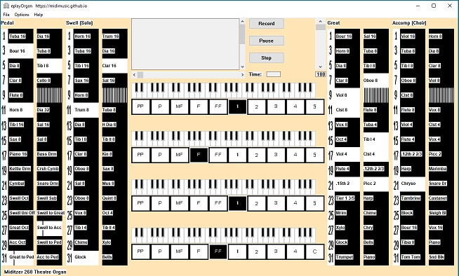

EplayOrgan
Author: David Back, November, December 2017 and March 2018
EplayOrgan, Multiple Organ Simulator
Version 1.0d Now Available for download
EplayOrgan is a brand new multi purpose organ intended to be playable by organists and versatile enough to be useful to everybody with an interest in organs. It will load and be playable almost instantly and does not need an expensive computer with huge amounts of memory. This organ was designed and tested on a 64 bit Windows 10 system but was always intended to be versatile in that it will run on any Windows system back to and including Windows XP. It will also run on any Mac or Linux system under Wine. All the basics are in place for producing native Mac and Linux versions in due course. Latency is negligable under Windows.
I am still gaining experience with it myself and invite comments from others, particularly experienced organists, on its merits or problems with playability. My contact details are in About on this website. I will endeavour to cure any problems which arise and issue new versions as appropriate.
Main Features
- Easy and quick to install.
- No setup required, just connect one or more midi keyboards, select ports, select your organ and begin playing.
- Midi channels are automatically setup for each organ.
- The keys, stops and pistons are all fully animated and their state is easily visible.
- Coupled keys move to show their state.
- See the Wurlitzer Band Organ keys and stops moving for the first time ever.
- Optional individual sound font for each division.
- Up to four stereo audio outputs.
- Unlimited polyphony.
- All organs have the same basic layout and are user configurable.
- Organs included: Miditzer 160, 216 and 260 cinema organs
Wurlitzer 125, 150 and 165 band organs
Hauptwerk St Anne's Mosely, Burea Church, Paramount 310
Estey Church Organ
Viscount Regent and a Viscount Church organ for use with eplayWin32 - More organs can be easily added.
Completely free to download and to use.
Various videos of eplayOrgan in action
Miditzer 260 Theatre Organ
Wurlitzer 165 Band Organ
Viscount Regent Church Organ
EplayOrgan replaces multiOrgan but multiOrgan can still be downloaded if you want it
multiOrganV2_0setup.zip Download multiOrgan.Completely free to download and to use.